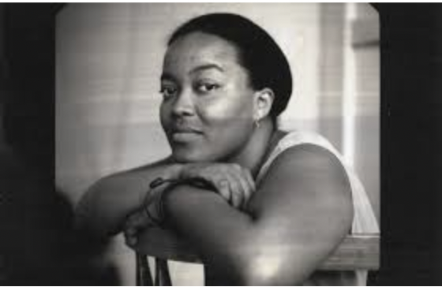
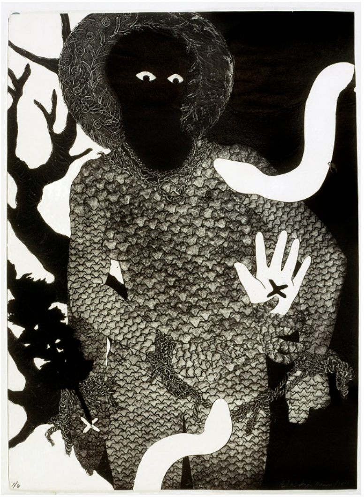
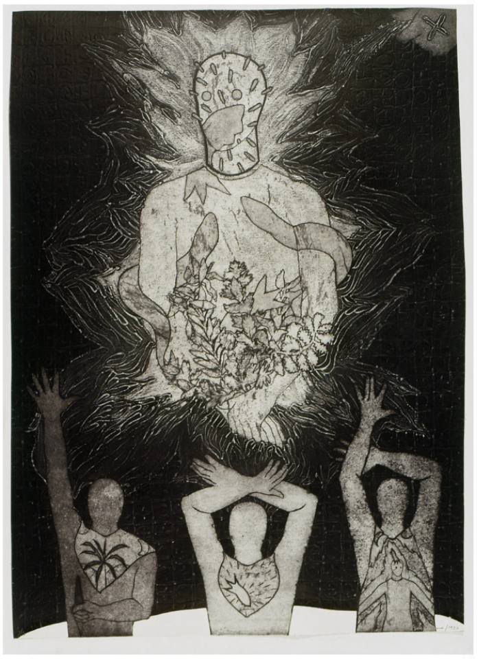

This section gathers artists who draw on spiritual, religious, and mythic traditions to challenge historical erasure and patriarchal power. Through rituals, symbols, and ancestral narratives, these works channel what has been silenced, using myth as a symbol for reclamation

Belkis Ayón Manso (1967–1999) was a groundbreaking Cuban printmaker known for her powerful use of collography. Her work drew heavily from Afro-Cuban religious mythology, particularly the legend of Sikan and the rituals of the all-male Abakuá secret society. Ayón reimagined these stories through haunting, symbolic imagery like ghostlike figures, snakes, goats, and the iconic empty almond-shaped eyes that seem to pierce the viewer. Though her life ended in tragedy, Ayón’s contributions to printmaking and her reworking of gendered spiritual narratives have had a lasting impact on contemporary Cuban art.
Medium: Collograph, 38 × 26 in.

Medium: Collograph, 37 3/8 × 26 5/8 in.
